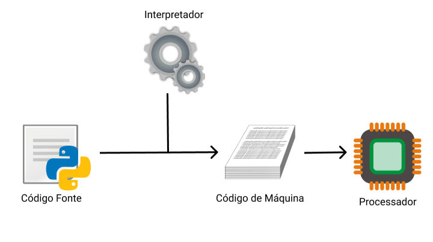
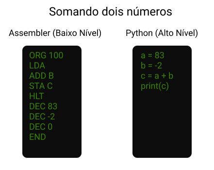

Como haviámos falado, Python se trata de uma linguagem de programação interpretada, de propósito geral e alto nível, sendo ela, uma linguagem capaz de suportar múltiplas normas de programação, como: linguagem imperativa, programação orientada a objetos e funcional. Além de ser uma linguagem com tipagem dinâmica e gerenciamento automático de memória.
Relaaaxe! Se ficou confuso com a informação acima, não se preocupe, pois agora veremos algumas propriedades da linguagem Python.
Propriedades da linguagem Python:
LINGUAGEM INTERPRETADA:
Isso significa que a execução do Python em cada computador é feita através de um processo no qual um dos principais componentes é o interpretador. Logo, códigos-fontes escritos em Python podem ser executados em SO's (Sistemas Operacionais) variados, como Windowns, Linux ou MacOS, assim, evitando a ocorrência de problemas como erros na execução de arquivos executáveis (.exe) em um sistema operacional diferente, por exemplo, problema esse que não ocorre com um programa em python, já que, para cada SO há um interpretador pronto para ler seu programa e executá-lo no sistema específico.

LINGUAGEM DE ALTO NÍVEL:
O Python é muito mais próximo da linguagem humana do que da linguagem de máquina ou de máquina, sendo fácil de ser ler e escrever ideias de programação nela.

SUPORTE A MÚLTIPLOS PARADÍGNMAS DE PROGRAMAÇÃO:
Normas ou Paradígmas de Programação, tratam-se das diferentes ações que um pode usar para a construção de códigos e resolução de questões específicas.
IMPERATIVO OU PROCEDUAL: As instruções são passadas ao computador na ordem que devem ser executadas.
ORIENTADO A OBJETOS: Refere-se ao uso de estruturas chamadas classes e objetos e sua principal posibilitar uma programação multiplataforma.
FUNCIONAL: Trata-se do uso de estruturas chamadas de funções, resppnsáveis por separar o código em blocos nos quais cada um tem uma tarefa específica.
TIPAGEM DINÂMICA: Significa que o programa em si é capaz de entender qual o tipo de dados está sendo usado, logo, não havendo necessidade de ser previamente declarado como em outras linguagens.
GERENCIAMENTO AUTOMÁTICO DE MEMÓRIA: É a realização constante de manutenção ou "limpeza" da memória não usada através de mecanismos como o garbage collector (coletor de lixo) e a Reference Counting (Contagem de Referência). Assim, o programador não precisa se preocupar em fazer um gerenciamento manual de memória.
HISTÓRIA
Bem...Para sanar essa dúvida devemos voltar no tempo, mais especificamente para o final da década de 1980, quando Guido van Hossum trabalhava com a linguagem de programação ABC, uma linguagem essa, que era destinada ao uso de não programadores e muito usada no sistema operacional Amoeba. Inspirado pela fácil sintaxe da linguagem ABC, mas frustrado com o seu visual monolítico e outras limitações, Van Hossum decidiu iniciar um projeto paralelo que levaria ao nascimento do Python.
A primeira versão da linguagem Python (0.9.0) teve seu lançamento em 1991, e incluia os conceitos de classes com herança, funções e tipos fundamentais de dados. Desde então, a linguagem passou a receber várias novas versões. Dessas, as mais famosas são as versões 2 e 3. A Python Software Foundation (PSF), fundada em 2001, é uma organização sem fins lucrativos que possui a propriedade intelectual relacioanda à linguagem Python. Atualemente, a PSF é a encarregada pela curadoria e gerenciamento geral das versões da linguagem.